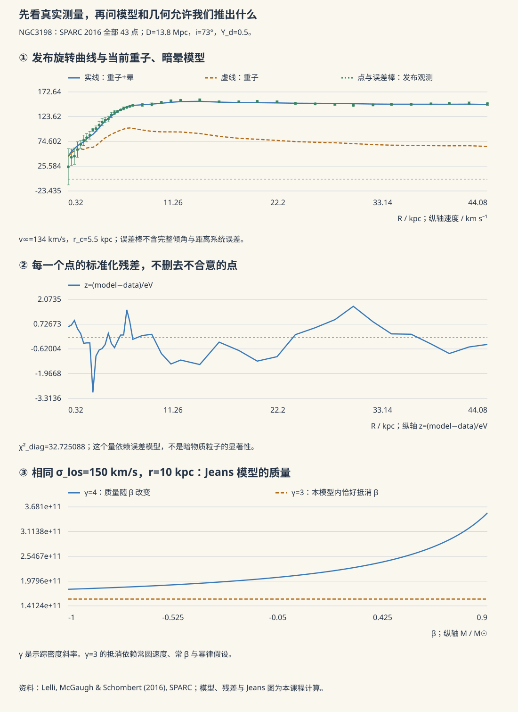

本页目录
天体 VI · 星系动力学与暗物质
对标：Binney & Tremaine《Galactic Dynamics》/ Mo, van den Bosch & White ｜ 前置：mech-01、cosmo-01、cosmo-02 星系是无碰撞的引力多体系统——恒星之间几乎从不相撞，却被集体引力场支配。而当我们仔细称量星系的质量时，得到了二十世纪物理学最持久的难题之一：看得见的物质远远不够。
学习层：平坦旋转曲线拍到的是暗物质，还是一条需要模型翻译的数据？
1. 具体情境：三条曲线可以都拟合，证据层级却不同
设观测者测得旋涡星系中气体或恒星的视线速度，经倾角、距离和非圆运动校正后得到 \(v(r)\)。在球对称、圆轨道、Newton 引力的透明 toy 中，
所以若外缘 \(v(r)\) 近似常数，在这些假设下就有 \(M(<r)\propto r\)。若发光重子的 enclosed mass 已趋于常数，它单独给出的速度应接近 \(r^{-1/2}\)；二者差额可用延展暗晕描述，也可在修改动力学框架中改变加速度关系。
关键不在于把三条曲线画在一起，而在于分清三层：望远镜给出经过校准的速度/光度/透镜数据；动力学或透镜模型把数据反演成引力质量；“额外成分是什么粒子”还需要实验与多尺度证据。旋转曲线对质量缺口很有力，却不会在图例里自动写出 WIMP 或轴子。
2. 揭示前先预测
先回答四项：
- 在上述 Newton 圆轨道 toy 中，平坦曲线对应 \(M(<r)\) 趋于常数、正比于 \(r\)，还是正比于 \(1/r\)？
- 一条旋转曲线能否直接判定暗物质粒子的微观身份？
- 引力透镜绕开了恒星轨道各向异性，但它直接约束的是三维粒子轨道，还是给定几何与引力理论下的投影引力质量？
- MOND 对许多星系规律的成功应被认真记录；这是否等于它已经同时解释星系团、CMB 与结构增长的全部证据？
揭示后可调节可见质量、盘尺度、暗晕渐近速度、核半径与 MOND 加速度尺度。实验把可见物质、可见物质加暗晕和一个 simple-interpolation MOND toy 同图比较，并显示外缘斜率与模型反演的质量比。
3. 正式桥：从速度斜率到质量与密度斜率
若在某段半径上 \(v\propto r^\alpha\)，则球对称圆轨道反演给出
若相应密度也近似幂律 \(\rho\propto r^{-\gamma}\)，且该半径内积分收敛，则 \(M(<r)\propto r^{3-\gamma}\)，从而
因此开普勒外缘 \(\alpha=-1/2\) 对应 enclosed mass 渐近常数；平坦曲线 \(\alpha=0\) 对应 \(M(<r)\propto r\) 和局部 \(\rho\propto r^{-2}\) 的量级。真实星系不是球形单组分系统，盘的势、气体压强支撑、倾角、棒与旋臂都会进入误差账本；这里的关系是解释斜率的基准，不是任意星系的无条件反演器。
JavaScript 失效时的静态 fallback：取无量纲 \(G=1\)，用球对称化指数盘近似可见 enclosed mass
并用有核平坦速度 toy
默认 \(M_b=4\)、\(R_d=1.5\)、\(v_\infty=1.15\)、\(r_c=1.2\)。到 \(r=12\) 时可见质量几乎饱和，可见曲线接近 \(r^{-1/2}\)，而暗晕项接近常数；用 \(rv_{\rm tot}^2\) 反演的总质量继续增长。这个球化指数盘不是精确薄盘势，暗晕也不是对真实星系的唯一参数化。
| 账目 | 能回答 | 不能单独回答 |
|---|---|---|
| 旋转曲线 | 给定几何和动力学假设下的径向引力需求 | 暗物质的粒子身份 |
| 引力透镜 | 给定透镜几何和引力理论下的投影质量 | 单独给出三维密度与微观组成 |
| CMB/BBN/结构增长 | 宇宙成分与增长历史的跨时期约束 | 某个实验室候选已被确认 |
| MOND 星系规律 | 低加速度星系中紧致的经验关系 | 自动覆盖星系团与宇宙学全部证据 |
4. 证据边界：现象、反演与微观身份
- 观测级：速度、光度、透镜形变、CMB 谱和结构统计来自不同仪器与系统误差；“多条证据一致”不是把同一数据重复计数。
- 模型级：\(M=rv^2/G\) 使用球对称圆轨道；透镜质量不依赖恒星动力学，却仍依赖透镜几何、质量片简并和采用的引力理论。
- 现象级：标准引力框架下，非发光质量成分能统一解释多尺度证据；这是比单条旋转曲线更强的结论。
- 身份级：暗物质究竟是何种粒子或天体仍未解决。现象证据强与直接探测尚无确认信号可以同时为真。
- 替代理论：MOND 的星系尺度成功是真实经验约束，必须解释；它在其他尺度遇到困难，也必须同样进入账本。

1. 无碰撞系统的动力学
弛豫时标估算：两体相遇改变轨道所需时间
星系 \(N\sim10^{11}\) → \(t_{\rm relax}\gg t_{\rm Hubble}\)，所以在星系年龄内通常达不到由二体碰撞驱动的热平衡，动力学近似是无碰撞的。这不等于系统“从未演化”：相混合和 violent relaxation 仍可在时变集体势中形成粗粒化准平衡。
因此用无碰撞 Boltzmann 方程（Vlasov 方程）描述相空间分布 \(f(\mathbf x,\mathbf v,t)\)，取一阶矩得一般的 Jeans 方程（相当于流体的动量方程，但压强由速度二阶矩代替）：
常见的稳态写法令第一项为零；进一步由投影速度弥散反演质量时，还要处理各向异性、边界项与几何退化。
"压强"来自恒星速度的无规分布——这就是椭圆星系靠"速度弥散"而非旋转来抵抗引力的原因。
位力定理（🔗 ap-02 恒星版的星系版）：对束缚、近稳态、可忽略表面压力项的系统，时间平均满足 \(2K+W=0\)。因此可由速度弥散与半径估计总质量：
其中无量纲结构因子 \(C\) 依赖密度剖面、观测孔径、几何与速度各向异性，通常不能在不同系统间盲取为 1。
这是星系质量测量的基本工具，也是暗物质证据的第一个来源（Zwicky 1933 用它称后发座星系团，发现质量远超发光物质）。
2. 旋转曲线：最直观的证据
在轴对称盘的中面，圆速度的一般关系是 \(v_c^2(R)=R\,\partial_R\Phi\)；只有在球对称 Newton 势中才化为 \(v^2(r)=GM(<r)/r\)。
若质量集中在可见盘内，外围应有 \(v\propto r^{-1/2}\)（开普勒下降）。观测（Rubin & Ford 等，1970s）却发现旋转曲线在远超光学半径处仍保持平坦。
平坦曲线的基准含义：在球对称 Newton toy 中，\(v=\) 常数 \(\Rightarrow M_{\rm eff}(<r)\propto r \Rightarrow \rho_{\rm eff}\propto r^{-2}\)。这提示延展的非发光引力成分，并可由相关半径范围内近似等温的晕来描述；它不是对真实盘势的唯一密度反演，也不唯一指定暗晕剖面。
3. 证据链：为什么大多数物理学家接受暗物质
单一证据可以被质疑，但多条独立证据指向同一结论：
| 证据 | 尺度 | 说明 |
|---|---|---|
| 旋转曲线 | 星系 | 上节 |
| 速度弥散/位力质量 | 星系团 | Zwicky 1933 |
| 引力透镜 | 星系–星系团 | 约束投影引力质量，不依赖恒星动力学，但依赖透镜几何与质量模型（gr-02） |
| 子弹星系团 | 星系团碰撞 | 透镜质量中心与 X 射线气体（重子主体）明显分离；对纯重子、最小 MOND 图景是强挑战，但完整相对论修改引力模型仍需逐一检验 |
| CMB 声学峰 | 宇宙 | 第二/第三峰的相对高度精确给出 \(\Omega_c/\Omega_b\)（cosmo-02） |
| BBN + CMB 的重子量 | 宇宙 | 重子约 5%，而总物质约 30%，缺口不能由普通重子填满 |
| 大尺度结构与增长 | 宇宙 | 无暗物质则结构来不及在 CMB 各向异性的初始条件下长成 |
注意最后三条的分量：它们来自完全不同的物理与时期，却给出相容的冷暗物质份额（约为宇宙临界密度的四分之一量级）——这种跨方法的一致性，是暗物质假说的真正力量所在。
4. 替代方案与它的困难【争】
MOND（修改牛顿动力学）：在极低加速度（\(a<a_0\approx1.2\times10^{-10}\ \mathrm{m/s^2}\)）下修改惯性或引力。
成功之处（必须承认）：用一个普适加速度尺度的 MOND 型关系可很好地描述大量星系的旋转曲线；在深 MOND、孤立且接近平衡等条件下还得到重子 Tully–Fisher 关系 \(M_b\propto v^4\)。这类紧致星系规律是任何暗物质星系形成模型都必须复现的重要经验约束。
主要困难：
- 最小、仅重子 MOND 在星系团中通常仍留下质量缺口，部分扩展模型会引入额外不可见成分；
- 子弹星系团的质量—气体分离对纯重子修改引力图景构成强挑战，但结论依赖具体相对论理论；
- 同时拟合 CMB 声学峰、结构增长和透镜需要完整的相对论宇宙学，而不只是星系尺度加速度律；
- TeVeS 等相对论化版本引入额外场；GW170817 的引力波速度约束排除了其中一部分实现，而非逻辑上所有修改引力方案。
本站立场：冷暗物质加广义相对论是当前跨尺度数据的标准解释；MOND 型星系规律是真实且值得解释的经验约束，但最小形式不能独自覆盖全部证据。 对具体相对论扩展应按其场内容和预言逐一比较，故本节标【争】而非【定论】。
5. 暗物质是什么【未解】
标准宇宙学解释下推断的性质：主导成分应以非重子、冷或足够冷、近似无碰撞且电磁上暗的形式参与结构形成；这些是对有效宇宙成分的约束，不是已确认粒子的身份证。
候选：WIMP（直接探测实验持续加严限制，尚无确认信号）、轴子（同时解决强 CP 问题，实验在推进）、原初黑洞（多数质量窗口已被微透镜与吸积约束排除）、惰性中微子等。
已排除：普通重子物质（BBN + CMB）、标准模型中微子（太热，会抹平小尺度结构）。
小尺度挑战【争】：核-尖点问题、卫星星系数目、too-big-to-fail——冷暗物质模拟与观测在星系内部尺度上存在张力。是否由重子反馈过程解释，仍是活跃课题。
6. 星系的形态与形成
- 哈勃分类：椭圆（速度弥散支撑、老年星族）、旋涡（旋转支撑、有气体与恒星形成）、不规则；
- 旋臂：不是物质结构，而是密度波（Lin–Shu）——恒星穿过旋臂如同车流穿过堵点。否则会被较差自转迅速缠绕（"缠绕疑难"）；
- 层级成团：小结构先形成、并合成大结构（🔗 cosmo-02 的结构增长）；
- 星系–黑洞共演化：\(M_{\rm BH}\)–\(\sigma\) 关系（中心黑洞质量与核球速度弥散的紧密相关）提示反馈耦合（ap-05 的 AGN 输出调节了母星系的恒星形成）。其因果机制仍在研究【争】。
7. 练习与要点
例 1（银河系的暗物质） 太阳处 \(v\approx220\) km/s、\(r\approx8\) kpc：\(M(<r)\sim v^2r/G\approx9\times10^{10}M_\odot\)。而可见恒星与气体只占其中一部分，外围差距随半径继续扩大。
例 2（位力称重） 后发座星系团 \(\sigma\sim1000\) km/s、\(R\sim1\) Mpc：先算 \(\sigma^2R/G\approx2.3\times10^{14}M_\odot\)；取与剖面、孔径和各向异性有关的 \(C\sim3\text{--}5\)，得到 \(M\sim(0.7\text{--}1.2)\times10^{15}M_\odot\)。光度对应的恒星质量小得多——Zwicky 的核心发现正是这个质量缺口。
例 3（为什么"冷"很关键） 若暗物质是热的（相对论性），自由流动会抹平小尺度扰动 → 大结构先形成（自上而下）。观测支持自下而上的层级成团 → 暗物质必须是冷的。这是一条排除了标准模型中微子的关键论证。\(\blacksquare\)
天体线到此结束。它与已有的广相（gr）与宇宙学（cosmo）两线合起来，构成从恒星到宇宙的完整链条。